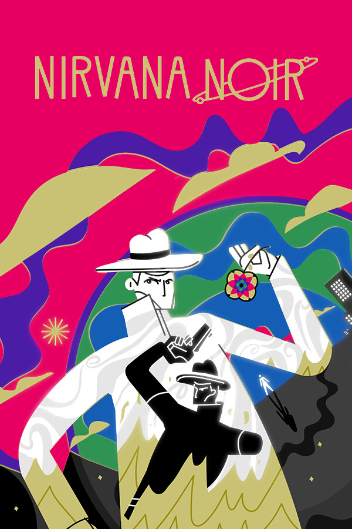

Nirvana Noir Demo
Nirvana Noir Demo
Details
|  | |
| Playtime | Not Played |
| Last Activity | Never |
| Added | 2024-06-11 0:33:57 |
| Modified | 2025-10-02 10:26:11 |
| Completion Status | Abandoned |
| Library | Steam |
| Source | Steam |
| Platform | PC (Windows) |
| Release Date | |
| Community Score | |
| Critic Score | |
| User Score | |
| Genre | |
| Developer | |
| Publisher | |
| Feature | |
| Links | |
| Tag | 2D Abstract Adventure Atmospheric Colorful Conspiracy Crime Detective Exploration Indie Investigation Mystery Noir Point & Click Psychedelic Puzzle RPG Space Story Rich Stylized |
Description


In Genesis Noir, did No Man travel through a dying universe to prevent the death of his lover or did he stop the affair before the fatal gunshot was fired? No Man must confront the consequences of this decision in Nirvana Noir, as his world branches into two reflected realities, Black Rapture and Constant Testament.
Both realities are threatened by a mysterious Bigger Bang and it’s up to No Man to uncover the conspiracies behind the threats and save the cosmic city before it is too late.

No Man’s actions during the events of Genesis Noir resulted in two parallel realities - Black Rapture and Constant Testament.

In Black Rapture, No Man labors to complete the intricate mechanisms of a clocktower but is disrupted when a series of arsons break out across the cosmic city.

Constant Testament is an explosion of color and sin. No Man is coerced by the police to investigate a dangerous new drug whose appearance is intertwined with an old flame.
Play across the different realities in an effort to save both.


Like Genesis Noir, Nirvana Noir is a seamless blend of animation and interactivity and is overflowing with unique puzzles and interactions. In your quest to solve the mysteries you’ll find yourself...
Reconstructing a demolished building
Mounting a legal defense
Collecting the last words of characters you meet
Finding skeletons in closets
Trying not to break under interrogation
Interviewing witnesses
Manipulating words to get to the hidden truth behind them
Following the word on the street
And much more...

Two time Independent Games Festival winner, Genesis Noir, received nominations for over 30 prestigious awards and was lauded by media for its ambitious ideas and the stunning audio-visual journey it takes you on.

Genesis Noir explored the creation of the universe and humanity, giving only brief but tantalizing glimpses into the Constant. Whilst set following the events of the original, Nirvana Noir is a standalone story. It takes a deeper dive into the city and the cosmic beings who live there and brings in a deeper level of gameplay, exploration, and mechanics, expanding on all the things that made Genesis Noir so compelling.


Who is setting the fires that rage across the city and does it have something to do with a suspicious demolition company called Bigger Bang?
Where is the dangerous new drug, Bigger Bang, coming from? What does it have to do with your old flame and their new counterculture movement?
Talk to suspects, search for clues, use your Mind's Eye to track your open lines of investigation, and piece together the evidence to unravel the mysteries of the Bigger Bang.

Nirvana Noir features the music and sound design of Skillbard, a London-based team of composers and sound designers who work in film, television, games, sound art, pop music, and sonic branding.
Skillbard won multiple awards for their work on Genesis Noir including the Independent Games Festival Award for Excellence in Audio, and we’re delighted to be collaborating with them again on Nirvana Noir.
You can expect another amazing soundtrack that reacts and responds to the game, this time with both noir and neo-noir, jazz and psychedelic influences, as well as music-focused puzzles and interactions.
ABOUT THE DEVELOPER

Feral Cat Den is a small team of artists who dream of nesting in a derelict barn. Until then, we have a small studio in Brooklyn where we make games, animations, web things, VJ things, and many other side-projects. Our mission is to fuse animation + interactivity and create visually rich and tactile experiences.
Nirvana Noir is our second major release.